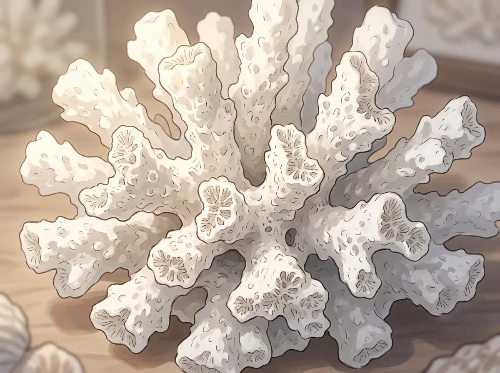
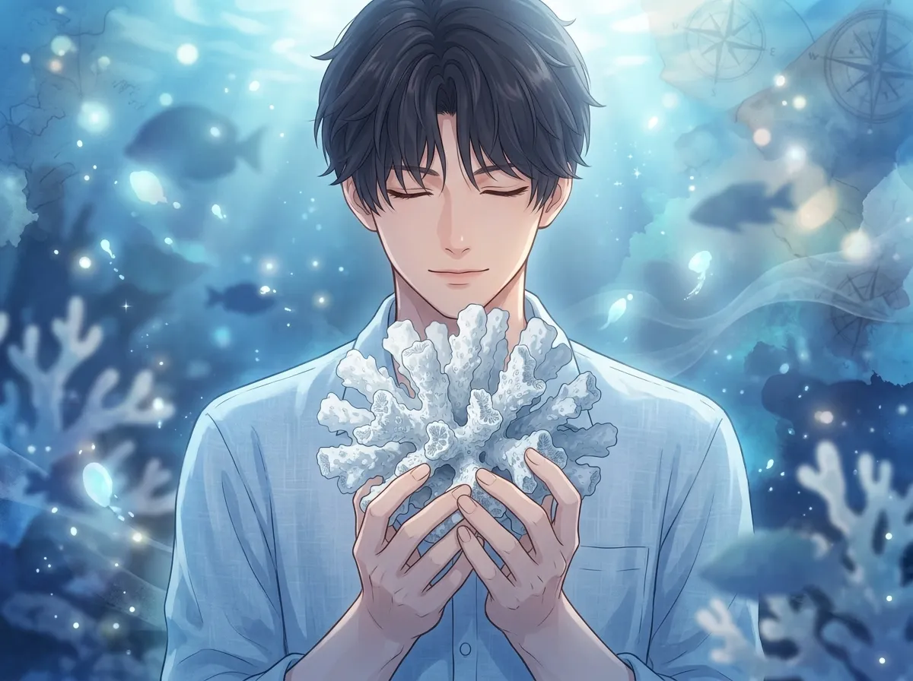
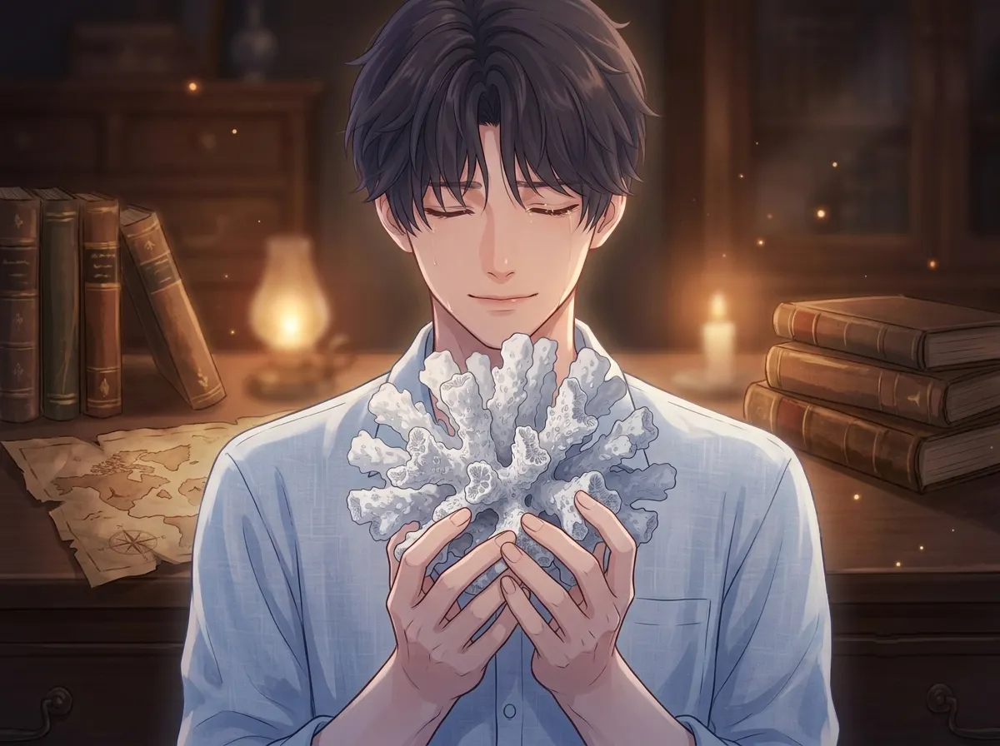
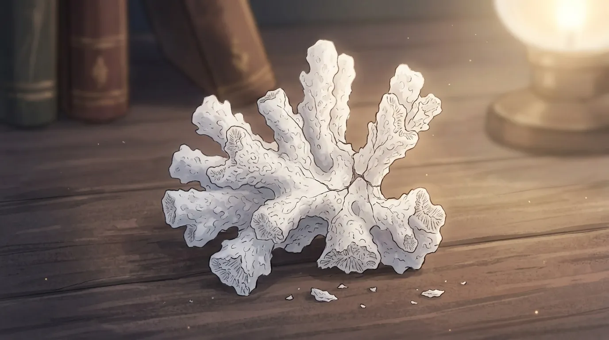
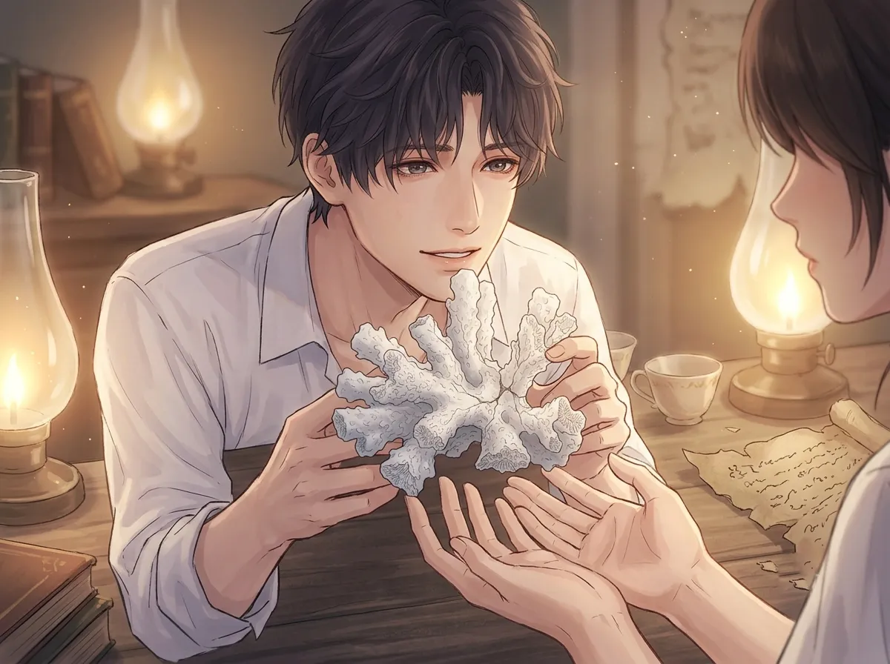

A small piece of coral. Rough. White. Almost crumbling. He keeps it in his pocket.
He had a piece of coral. A small piece. Rough. White. Almost crumbling at the edges.
It was from the sea. The old sea. The sea that no longer exists. The sea that was his home.
He carried it up with him. When he left. When he walked out of the water and never went back. He carried it in his hand. He carried it in his pocket. He has carried it ever since.
It is dry now. It has been dry for a long time. But he can still feel the sea in it. He can still feel the salt. He can still feel the home.
This is the story of that coral.

He took one thing from the sea. One small thing. One piece of coral.
Not the palace. Not the throne. Not the city. Not the people. Just a piece of coral. Small. White. Rough. Broken from the reef where he had grown up.
He took it because he couldn't take anything else. He took it because he needed something. Something to remember. Something to hold. Something to prove that the sea was real. That the kingdom was real. That he was real.
He has kept it ever since. In his pocket. In his hand. In the place where he keeps the things he can't afford to lose.
It is the last thing he has from home. The only thing that still remembers where he came from.
He saved one thing. One small thing. A piece of coral. Broken. Rough. White. Almost crumbling.
He couldn't save the palace. He couldn't save the kingdom. He couldn't save the people. He saved one piece of coral. Small. Insignificant. Useless.
He saved it because it was the only thing he could save. He saved it because he needed to save something. He saved it because he needed to prove that the sea was real.
He has kept it ever since. It is the last thing he has from home.

The coral is dry. It has been dry for a long time. It has been out of the sea for longer than it was in it.
But he can still smell the salt. He can still feel the sea. He can still taste the water. He can still see the reef where it came from.
He holds it in his hand. He closes his eyes. He remembers. He remembers the sea. He remembers the kingdom. He remembers the home that is no longer there.
The coral is the only thing that still holds the memory. The only thing that still remembers what the sea sounded like. The only thing that still remembers what the sea smelled like. The only thing that still remembers what the sea felt like.
The coral is dry. It has been dry for centuries. It doesn't hold water. It doesn't hold salt. It doesn't hold anything.
But it holds memory. It holds the memory of the sea. It holds the memory of the kingdom. It holds the memory of the home that is no longer there.
He holds it. He remembers. He closes his eyes. He is back in the sea. He is back in the kingdom. He is back in the home that is no longer there.
He doesn't know how the coral holds the memory. He doesn't know why it still remembers. He only knows that it does. He only knows that he is grateful.

He holds it when no one is watching. When he is alone. When the silence is too loud. When the memory is too heavy.
He takes it out of his pocket. He holds it in his palm. He looks at it. He feels its roughness. He feels its weight. He feels its presence.
It is the only thing that stays. The only thing that never leaves. The only thing that is always there.
He doesn't know why he holds it. He doesn't know why it helps. He only knows that it does. He only knows that when he holds the coral, he feels less alone.
He holds it when no one is watching. When the silence is too loud. When the memory is too heavy.
It is the only thing that stays. The only thing that never leaves. The only thing that is always there.
He doesn't know why it helps. He doesn't know why holding a piece of coral makes him feel less alone. He only knows that it does. He only knows that when he holds it, he remembers that he is not nothing. That he came from somewhere. That he belongs to something.

The coral is crumbling. It has been crumbling for years. Small pieces flake off. The edges are rough. The surface is cracking.
He is afraid it will disappear. He is afraid it will crumble into dust. He is afraid he will have nothing left from home.
He keeps it anyway. He keeps it because he can't throw it away. He keeps it because it is all he has. He keeps it because he would rather have a crumbling piece of coral than nothing at all.
He doesn't know what he will do when it is gone. He doesn't know what he will do when there is nothing left. He only knows that he will keep it until it disappears. He will keep it until there is nothing left to hold.
The coral is crumbling. It is disappearing. One day it will be gone. One day there will be nothing left.
He is afraid. He is afraid of losing the last thing he has from home. He is afraid of being left with nothing. He is afraid of being completely alone.
He keeps it anyway. He keeps it because he can't throw it away. He keeps it because he would rather have a crumbling piece of coral than nothing at all.
He will keep it until it disappears. He will keep it until there is nothing left to hold.

One day, she saw it. He had it in his hand. He didn't put it away in time. He didn't hide it.
She looked at it. She looked at the rough edges. The white surface. The small cracks. She didn't ask what it was. She didn't ask where it came from. She didn't ask why he kept it.
She just looked at it. And then she looked at him.
"It's from somewhere important," she said.
He didn't answer. He didn't know how to answer. He didn't know how to tell her that the coral was from the sea. From the kingdom. From the home that no longer exists. From the place he can never return to.
He didn't know how to tell her that the coral was the only thing he had left from who he used to be.
He didn't tell her. He didn't need to. She already understood.
She saw it. He didn't pull it away. He didn't hide it. He wanted her to see. He wanted someone to see the coral. He wanted someone to see the thing he had kept for so long.
She didn't ask. She didn't push. She just looked at it, and she understood. She understood that the coral was important. She understood that it mattered. She understood that it was the only thing he had left from home.
He didn't know why he wanted her to see it. He didn't know why he wanted her to know. He only knew that he did. He only knew that he wanted someone to understand. He only knew that he wanted someone to see him.
Rafayel had a piece of coral. A small piece. Rough. White. Almost crumbling. He carried it with him everywhere.
It was from the sea. The old sea. The sea that no longer exists. The sea that was his home.
He took it when he left. It was the last thing he took from the kingdom. The only thing he could carry.
It is dry now. It has been dry for a long time. But it still holds the memory of the sea. It still holds the memory of the kingdom. It still holds the memory of who he used to be.
He carries it with him. He holds it when no one is watching. He keeps it because it is all he has left. He keeps it because he needs to remember. He keeps it because he is still the person who came from the sea.
He will carry it until it crumbles. He will carry it until there is nothing left.
Because it is the only thing he has from home. And he will never let it go.